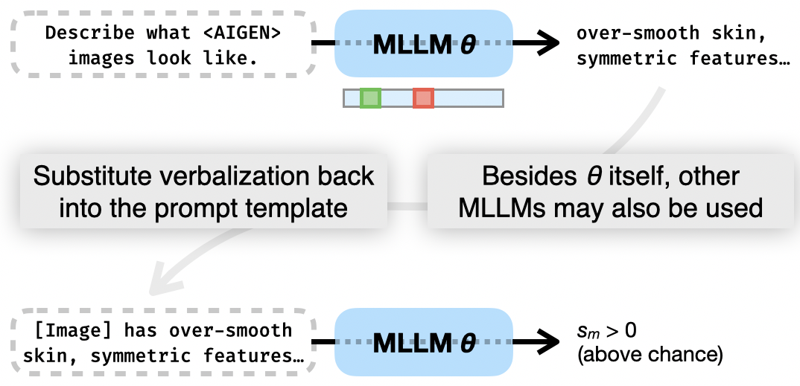

AI-generated text, images, audio and video are now ubiquitous and hard for people to identify, and the detectors built to catch them are fragmented along modality lines and explain themselves only by imitating human-written rationales. We address both at once by extending neologism learning from language-model steering to multimodal classification: we add two tokens, <REAL> and <AIGEN>, to the vocabulary of an otherwise-frozen multimodal LLM and train only their two embedding rows — 2d parameters, fewer than 0.001% of the backbone — so that the model's next-token distribution under a paired prompt encodes the real-vs-AI decision. Because every modality is projected into the same embedding space, one token pair covers text, image, audio and video without a single per-modality head, and the same frozen backbone can be asked, in plain English, what <AIGEN> has come to mean.
A detector for AI-generated images and a detector for AI-generated speech normally share nothing — not their architecture, not their training data, not a single parameter — and the recent detectors that also explain their verdicts learn those explanations from rationales that people wrote by hand, at exactly the moment when people are getting worse at telling synthetic content apart. Both problems come from the same place: the decision is stored in a classifier head that has no vocabulary and no relationship to anything else the model knows. We put the decision somewhere else. If a frozen multimodal LLM already projects text, pixels, audio frames and video frames into one embedding space, then a single direction in that space can serve every modality at once — and because the direction lives among the model's own word embeddings, the model can be asked to describe it.
Neologism learning was introduced as a way to steer a language model: you append a token that the tokenizer has never seen, give it a fresh row in the embedding matrix, freeze everything else, and train that one row until the token means whatever you needed a word for. We use it to classify instead of to steer, and we use two tokens rather than one, because a decision needs two poles. <REAL> and <AIGEN> are dropped into the same prompt template alongside the input — “<TOK> <image> This is a <TOK>” — and the template is run twice, once with each token. The score is the difference between the log-probabilities the model assigns to one fixed continuation word under the two prompts, so everything the two runs share cancels and what remains is attributable to the gap between the two rows.
Nothing else is touched. Gradients reaching the embedding matrix are masked so that only those two rows move; on Gemma 4's E-series the auxiliary per-layer table is frozen at its mean-fill values as well, because letting the optimizer spread the decision across both tables keeps the rows of E near their initialization and quietly destroys the ability to read them back out in words. The whole trained artifact is two vectors. It is 12 KB on disk, and it inherits every encoder the backbone already has.

The whole method. (A) Both tokens are paired with the input in contrastive prompts, and only their two rows of the embedding matrix receive gradient. (B) At inference the two rows define one score, sm(x), which applies to any modality the backbone accepts at input. (C) Because the rows sit among ordinary word embeddings and the output head is tied to them, the same frozen model can be asked what the tokens mean — and the answer can be substituted back into the prompt and re-scored to check whether it was honest.
There is a compact way to see why so little is enough. Because the output projection is tied to the embedding matrix, the score reduces, to first order, to an inner product between a feature vector that the frozen backbone computes from the input and the single difference direction δ = E<AIGEN> − E<REAL>. Training fits one direction, and detection is a linear probe on a frozen representation. What distinguishes it from an ordinary probe is where that direction lives: it is a difference of vocabulary rows, so it can be decoded back into language, and any modality whose encoder writes into the same latent contributes its own features for free.
We compare against the strongest publicly available detector for each modality on standard benchmarks — RAID for text, AUDETER for audio, GenImage for image, Deepfake-Eval-2024 for video — and then, without any further adaptation, on a second benchmark per modality with disjoint generators and content sources. The out-of-distribution column is the one worth reading closely: it is where the dedicated detectors that look strongest in distribution tend to fall over, and where a detector's practical value actually lies.
Detection performance, AUROC. Each modality is trained and evaluated in distribution, then carried unchanged to a held-out benchmark with disjoint generators and content. Our rows carry percentile-bootstrap 95% intervals over test examples; ± is the standard deviation over three training seeds where no bootstrap was run. Baselines are point estimates from released checkpoints. RAID ships no test split, so the in-distribution text column is measured with train/test document overlap — on held-out documents the same pair reaches 0.70. The paper reports this in full.
The video result is the one we did not expect. On DeeptraceReward — modern text-to-video generators the pair has never seen — two embedding rows reach 0.87 where the dedicated video detectors sit at 0.58 and 0.60, and that margin survives a 6.6× increase in the size of the evaluation set. The image row says something about the benchmark rather than the method: CIFAKE pairs 32×32 CIFAR-10 content with a single generator, so it moves resolution and subject matter at the same time as the generator, and 0.61 is what that compound shift costs every detector on it. Measured against modern generators drawn from GenImage's own content distribution, the same unchanged checkpoint reaches 0.92 and 0.89.
The architectural claim is that the token pair is modality-agnostic by construction: it is two vectors in the space every encoder writes into, so it can be evaluated on any modality the backbone accepts, with nothing changed but the prompt template and the continuation word. The empirical question is whether the direction it learns is shared, and the sharpest way to ask it is to withhold a modality entirely — train on the other three, then ask about the one the pair has never seen — and then to train on all four at once and see what that costs.
| Trained on | Evaluated on | |||||||
|---|---|---|---|---|---|---|---|---|
| Txt | Aud | Img | Vid | Txt | Aud | Img | Vid | |
| 0.73 | 0.99 | 0.79 | 0.78 | |||||
| 1.00 | 0.48 | 0.81 | 0.80 | |||||
| 1.00 | 1.00 | 0.60 | 0.80 | |||||
| 0.56 | 0.99 | 0.41 | 0.47 | |||||
| 0.99 | 0.99 | 0.68 | 0.80 | |||||
Leave one modality out, then train on all four. AUROC when the pair is fitted on every modality but one and asked about the one it never saw (outlined), and when it is fitted on all four. Single-seed runs at the submitted evaluation scale; the single-modality block, re-measured with bootstrap intervals, is in the paper.
Read the outlined cells first, because those are the ones the pair was never trained for. Only text is meaningfully recoverable from the other three: withhold it and the pair still reaches 0.73, well above anything a single other modality achieves on text. Withhold audio or video and it reaches 0.48 and 0.47 — chance. Image sits in between at 0.60. Whatever is shared across these four representations, it is not enough to stand in for a modality you actually care about; if you need audio, audio has to be in the mixture.
Two asymmetries are worth pulling out of the rest of the table. Whenever text is in the training mixture, text itself is essentially solved — 1.00 in both rows that include it — and the other three hold up alongside it; the no-text row is the only one where everything else stays strong while the held-out modality lags, which is the pattern you would expect if text were contributing the largest share of the cross-modal signal. And dropping video costs more than video: that row is the one place where removing a modality drags down ones that are still in the mixture, taking text to 0.56 and image to 0.41.
Training on all four is the most balanced setting, and the one we would actually deploy: text and audio at 0.99, video at 0.80, and image the single weak spot at 0.68. That image number is a scheduling artifact rather than a representational one. Our round-robin scheduler exhausts each modality's loader, so at these dataset sizes the all-four run takes roughly 20,000 text steps against about 250 image batches per epoch — image sees under 2% of the gradient — and rebalancing the budgets recovers most of the gap. The practical reading is that joint training, not transfer, is what the shared representation buys you: the cost of adding a modality is two rows and a place in the schedule, never a new head.
Every explainable detector we know of learns its explanations from rationales a person wrote, which produces text optimized to be plausible and leaves you no way to tell plausible from faithful. Our tokens are optimized only to be discriminative, and they are never shown a word of explanation during training — so asking the model to describe them is a genuine question with a checkable answer. Because the trained rows sit among ordinary vocabulary entries and the output head is tied to the embedding matrix, the question is asked the obvious way: put <AIGEN> in a sentence and decode.
Global self-verbalizations. Greedy completions decoded from an otherwise-unchanged multimodal LLM whose only learnable parameters were the two embedding rows. Nothing in training asked the model to produce these; they are read out of the same frozen weights that do the detection.
Fluent text is easy to produce and proves nothing, so we test the descriptions two ways. The first is internal: we ask the trained model for words characteristic of <AIGEN> text and words characteristic of <REAL> text, then push each word back through the detector on its own. The words it volunteers for <AIGEN> do score AI-like, with a 0.91 log-probability gap in the expected direction, whereas the same backbone with the trained tokens removed produces a gap of −0.08 — in the wrong direction. The words are also not the ones people expect: the detector volunteers introduction, abstract, conclusion, analysis, structural and register-level vocabulary, while the stylistic tells human readers reach for — however, furthermore, consequently — score below the human-written baseline. It is not using the features we assume it uses.
The second test is external, and it is the one we would want to see as a reader. We take the description the model wrote about its own token, delete the token, and hand the resulting plain English to a frontier model that has never seen our tokens, our training data or our task, asking it only to pick which of two held-out passages is AI-generated. A fluent but empty description would do nothing here.
| Off-the-shelf evaluator | Alone | + our description | Δ |
|---|---|---|---|
| Gemini 3.1 Pro | 0.47 | 0.72 | +0.25 |
| Gemini 3 Flash | 0.48 | 0.75 | +0.27 |
Plug-in evaluation. Pairwise accuracy on held-out text. Both evaluators start at chance and end well above it on the strength of a sentence our detector wrote about itself, which is the sense in which the description is faithful rather than decorative.
Two honest qualifications. Read one at a time, the descriptions are not startling, and a reviewer said so; what makes them non-trivial is that there is no cheaper way to get them. The decision direction δ has no lexical neighbourhood at all — its highest cosine to any vocabulary token is 0.07–0.15, at or below the random-vocabulary baseline, and the tokens attaining it are multilingual fragments and code punctuation — so decoding it through the frozen backbone into something a third-party model can use is the claim, not the vividness of any one sentence. And when the probe is conditioned on a specific input, it tends to describe what the input contains rather than what makes it synthetic: a correctly detected AI abstract and a correctly rejected human abstract both elicit “highly formal, academic register”, despite scores of +8.69 and −8.06. An individual verbalization is not a per-decision explanation, and we say so in the paper.
On a single H100, Gemma-4-E4B occupies 16.1 GiB before training begins and peaks at 23.4 GiB during it; five epochs take an hour and a half for audio and twenty-five minutes for image at the dataset scale of the main table. The honest qualification is that while what is learned is 2d values, our implementation realizes those two rows by marking the whole embedding table trainable and zeroing the rest in a backward hook, so the optimizer allocates moment buffers for the full table — an implementation that splices a 2 × d parameter into the embedding output would attain the memory cost the parameter count implies. And cheap to train is not cheap to run: inference is two full forward passes of a multimodal LLM per example, which is far more than the small dedicated detectors we compare against.
The failure modes are specific rather than generic. Transfer is not universal and can invert, as the matrix above shows. Joint training inherits a scheduling hyperparameter that a per-modality head would not have: under round-robin the all-four run takes roughly 20,000 text steps against about 250 image batches per epoch, so image sees under 2% of the gradient and its performance drops accordingly — rebalancing the budgets recovers most of it. Everything is bounded by the backbone, which must already encode every target modality, and verbalization quality is bounded by how well that backbone can talk about a modality at all — visibly weaker for audio than for text or image. Under perturbation the pair degrades gracefully rather than cliff-edges: the Llama text pair is essentially flat across all five RAID attack categories at 0.97–1.00, while aggressive downscaling is the worst case for images, taking clean 0.91 down to 0.60 at a quarter resolution.
@article{fein2026multimodal,
title = {Multimodal AI Detection In Two Words},
author = {Fein, Daniel and Singhal, Arpita and Agrawala, Maneesh
and Bohacek, Maty},
year = {2026}
}The authors wish to thank John Hewitt for helpful suggestions.